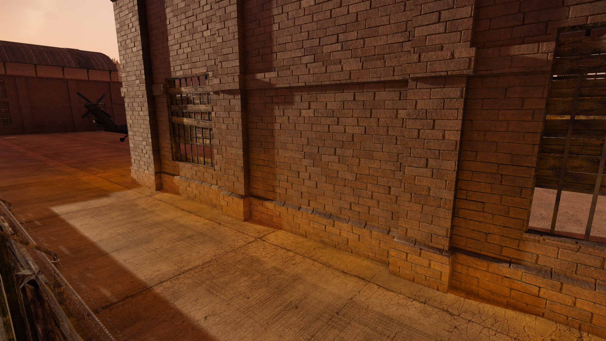
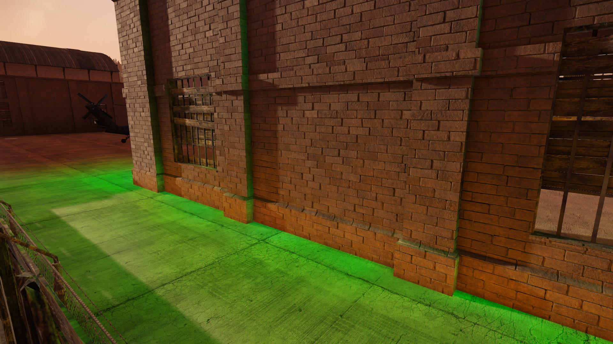
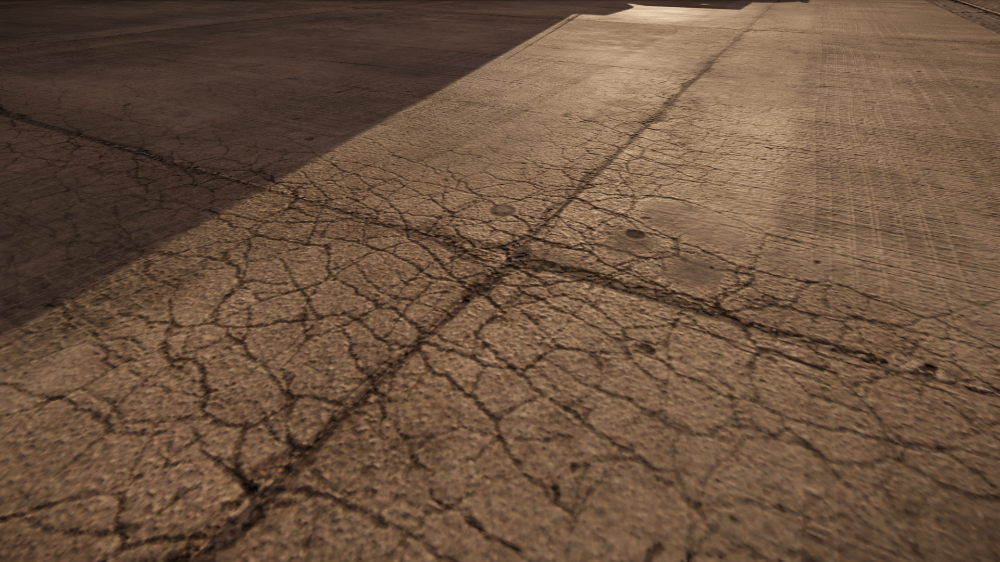
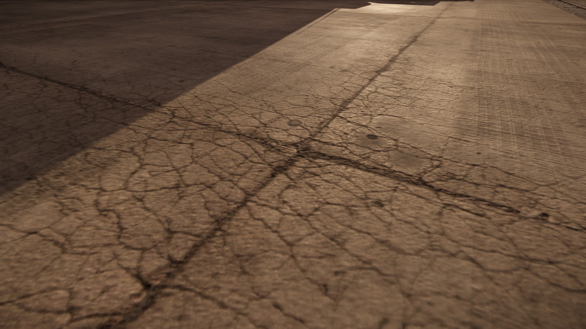

Overview
The Illum Shader is the most commonly used shader. It can be used to create an extremely wide variety of effects. If there is no specific shader for the type of effect you are trying to achieve, use the Illum Shader.
Shader Parameters
Parameter | Description | Shader Gen Option |
|---|---|---|
Emittance Map Gamma | Expands the lower range of emittance texture and allows darker colors to be interpreted as even less bright. This can be necessary to make a strongly emissive surface/object like a flame appear smooth. (1.0: Original range, 2.0: Maximum range) | Default |
Blend Factor | Controls the visibility of the blended layer. To use this parameter, you must enable Blendlayer in the Shader Generation Parameters. | Blend Layer |
Blend Falloff | Controlsblendingfalloff. To use this parameter, you must enable Blendlayer in the Shader Generation Parameters. | Blend Layer |
Blend Layer 2 Spec | Controls specular intensity of the second blend layer. To use this parameter, you must enable Blendlayer in the Shader Generation Parameters. | Blend Layer |
Blend Layer 2 Tiling | Controls tiling of the second blend layer. To use this parameter, you must enable Blendlayer in the Shader Generation Parameters. | Blend Layer |
Blend Mask Tiling | Controls tiling of the blend mask. To use this parameter, you must enable Blendlayer in the Shader Generation Parameters. | Blend Layer |
Decal Alpha Falloff | Pow applied to decal alpha. | Decal |
Decal Alpha Multiplier | Multiplier applied to decal alpha. | Decal |
Decal Diffuse Opacity | Opacity multiplier for fading out decal diffuse color. | Decal |
Detail Bump Scale | Sets detail bump scale. To use this parameter, you must enable Detail Mapping in the Shader Generation Parameters. | Detail Mapping |
Detail Diffuse Scale | Sets diffuse detail blend scale. To use this parameter, you must enable Detail Mapping in the Shader Generation Parameters. | Detail Mapping |
Detail Gloss Scale | Sets gloss detail blend scale. To use this parameter, you must enable Detail Mapping in the Shader Generation Parameters. | Detail Mapping |
Height Bias | Controls the height bias. To use this parameter, you must enable Parallax Occlusion Mapping in the Shader Generation Parameters. See Parallax Occlusion Mapping for more information. | OBM/POM/SilPOM |
Indirect Bounce Color | Modulates the bounced light from Global Illumination.   | Default (Global Illumination) |
OBM Displacement | Controls the amount of displacement for offset bump mapping (OBM). To use this parameter, you must enable Offset bump mapping in the Shader Generation Parameters. | Offset bump mapping |
POM Displacement | Controls the amount of displacement for parallax occlusion mapping (POM). To use this parameter, you must enable Parallax Occlusion Mapping in the Shader Generation Parameters. See Parallax Occlusion Mapping for more information. | Parallax Occlusion Mapping |
Self Shadow Strength | Allows movable objects, such as interactive objects or game characters, to cast shadows on themselves and each other. To use this parameter, you must enable Parallax occlusion mapping in the Shader Generation Parameters. See Parallax Occlusion Mapping for more information. | Parallax Occlusion Mapping |
SSS Index | Subsurface Scattering Index. Integer and Fractal usage are applicable. 0 to disable.   | Default |
Shader Generation Parameters
Parameter | Description |
|---|---|
Detail mapping | Add micro and macro details to the material surface. |
Offset bump mapping | Enables offset bump mapping. This option requires a heightmap, which you can select for the Normal Map option under the Texture Maps heading. |
Vertex Colors | Allows the use of fake ambient occlusion by using vertex colors or adds a bit more depth and contrast to the 3D model. |
Decal | Activate this function if you use a Decal. Decal planes are normally placed very close to other geometry. |
Parallax occlusion mapping | Enables parallax occlusion mapping. This option requires a heightmap, which you can select for the Normal Map option under the Texture Maps heading. See Parallax Occlusion Mapping for more information. |
Displacement mapping | Enables displacement mapping. This option requires a heightmap, which you can select for the Normal Map option under the Texture Maps heading. |
Phong tessellation | Enables the rough approximation of smooth surface subdivision. |
PN triangles tessellation | Enables the rough approximation of smooth surface subdivision. |
Blendlayer | Enables the blending of the normal-mapped diffuse layer on top of the base material. |
DetailMap mask in Diffuse alpha | Allow the artist to use the alpha channel in RGBA texture map to mask the decal. |
Silhouette POM | Enables parallax occlusion mapping with silhouettes. This option requires a heightmap, which you can select for the Normal Map option under the Texture Maps heading. |